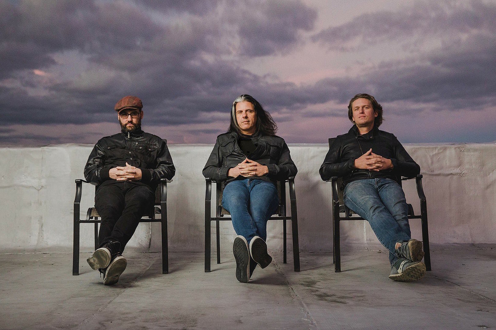
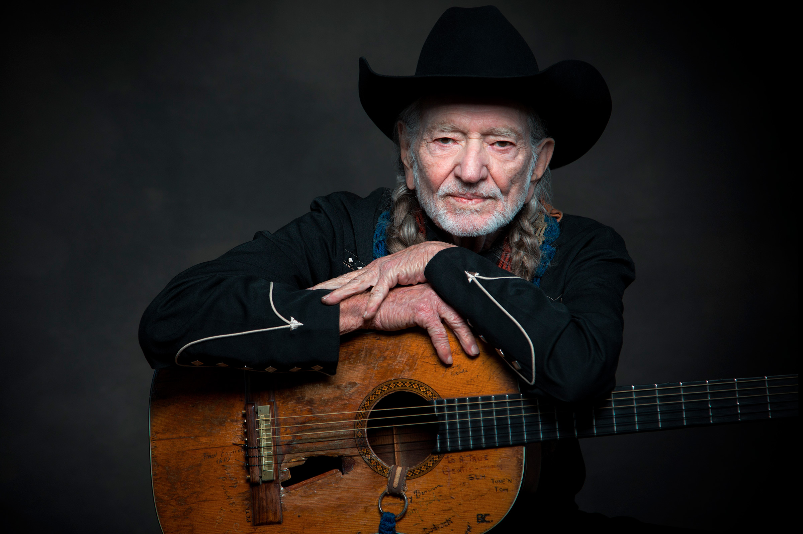

Events
Green kitchen
В нашем ресторане 2-3 раза в неделю проходят различные мероприятия. Обычно это музыкальные выступления, но иногда бывают мероприятия такого рода, как дегустация блюд или праздничные тематические вечеринки. Выступления музыкальных групп обычно попадают на пятницу и субботу, в основном это местые и приглашенные джаз или кантри группы. Они скрасят прекрасный выходной вечер.
Alex Skolnik Trio
Жанр: джаз
Alex Skolnick Trio – это американское джазовое трио, созданное гитаристом Алекс Сколником, известным по трэш-метал-группе Testament, ударником Мэтом Зебровски и басистом Натаном Пэком... С 2001 по 2003 год в группе на бас-гитаре играл Джон Дэвис. Трио известно тем, что исполняет каверы на песни различных групп классического рока и хеви-метала – они называют это «современными стандартами». Со времени выпуска своего первого альбома трио всё больше двигается в сторону исполнения собственного материала, на втором альбоме половина песен являются их собственными, а на третьем уже всего три кавера. Их четвёрный альбом, Veritas, содержит всего один кавер.
Когда
Пятница, 25 декабря, 19:00 – 21:30
The Bad Plus
Жанр: джаз, авангардный джаз
The Bad Plus – это американское джазовое трио из Миннеаполиса, США, в состав которого входят басист Рид Андерсон, пианист Оррин Эванс и барабанщик Дэйв Кинг... Итан Айверсон, Рид Андерсон и Дэвид Кинг впервые сыграли вместе в 1989 году, но создали The Bad Plus в 2000 году. Группа записала свой первый альбом, выпущенный на Fresh Sound, после того, как отыграли вместе всего три концерта. В музыке трио сочитаются элементы современного авангардного джаза с элементами рока и поп-музыки. 10 апреля 2017 года группа опубликовала заявление о том, что Итан Айверсон расстается с группой в конце 2017 года, а Орин Эванс заменит его на фортепиано с 1 января 2018 года.
Когда
Суббота, 26 декабря, 21:00 – 23:00
Tuba Skinny
Жанр: свинг, блюз, регтайм
Tuba Skinny – это традиционный джаз-бэнд, основанный в Новом Орлеане в 2009 году... Коллектив был вдохновлен ранним джазом и блюзом 1920-х и 1930-х годов. Группа выступала на улицах и сценах по всему миру, включая музыкальные фестивали в Мексике, Швеции, Австралии, Италии, Франции, Беларуси, Франции и Италии. Состав этого коллектива играет на таких инструментах как, корнет, кларнет, саксофон, тромбон, гитара, туба, банджо и стиральная доска. Offbeat Magazine наградил альбом Owl Call Blues как лучший альбом в жанре традиционного джаза 2014-го года. Эта премия была основана в 1994 году и вручается только музыкантам из Луизианы.
Когда
Воскресенье, 10 января, 20:30 – 21:50
Willie Nelson
Жанр: кантри, кантри-рок, альт-кантри
Willie Nelson – американский композитор и певец, работающий в стиле кантри. Обладатель 12 наград «Грэмми», в том числе в номинациях «Музыкальная легенда» (1990) и «За жизненные достижения» (2000). Включен в зал славы кантри (1993)... На его счету более сотни пластинок, десяток из которых стали мультиплатиновыми, на 70-летие ему подарили ни много, ни мало – знамя Техаса, а сенаторы штата скопом выразили благодарность за то, что он соизволил прервать турне ради встречи с ними. Вилли Нельсон успел сняться в нескольких десятках фильмов, записаться с самыми известными музыкантами (от Боба Дилона до Хулио Иглесиаса), стать первым кантри-исполнителем, заключившим контракт с "Island Records", поработать с Дэниэлем Лануа. Он просто всегда знал, что должен играть – даже тогда, когда казалось, что позади река виски, а впереди ни денег, ни признания.
Когда
Суббота, 7 февраля, 19:40 – 21:20